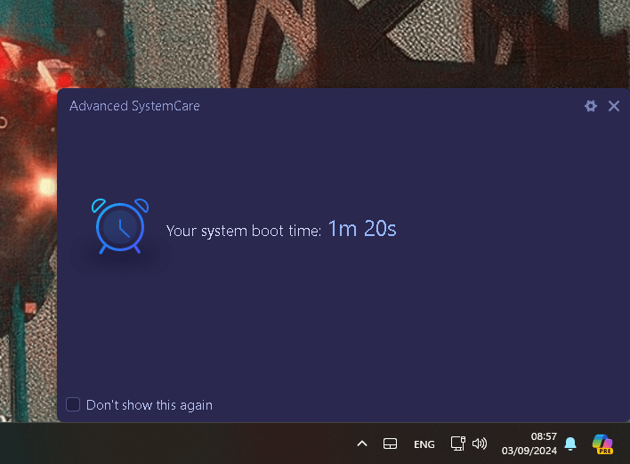
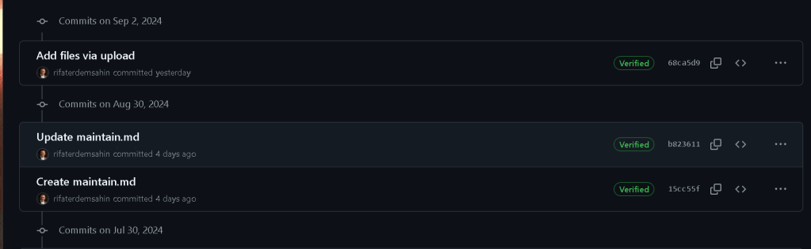
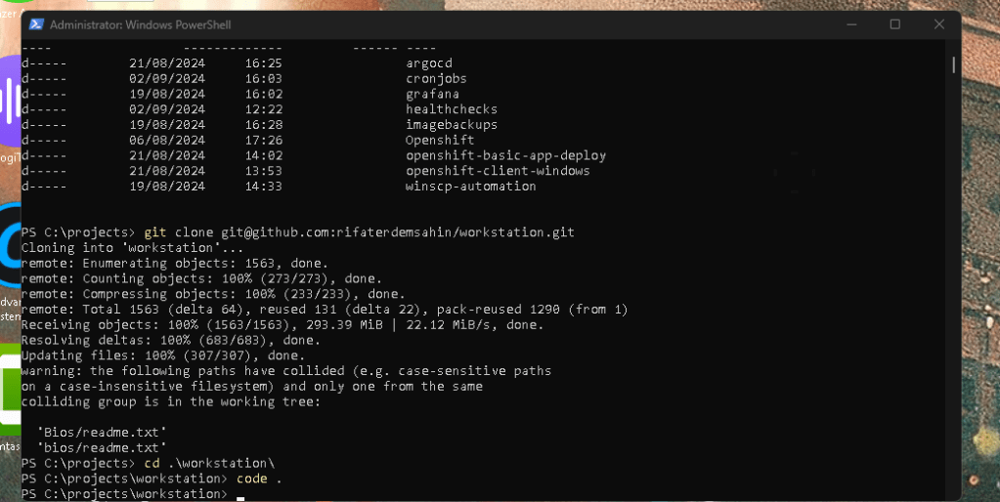
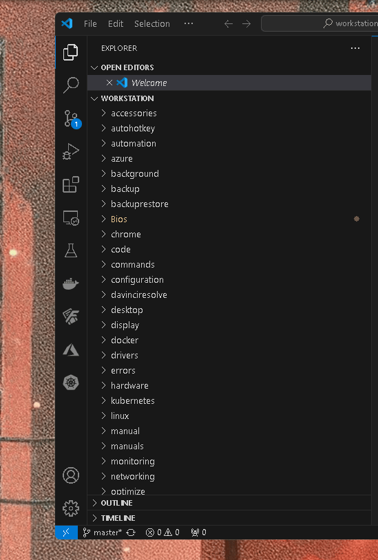
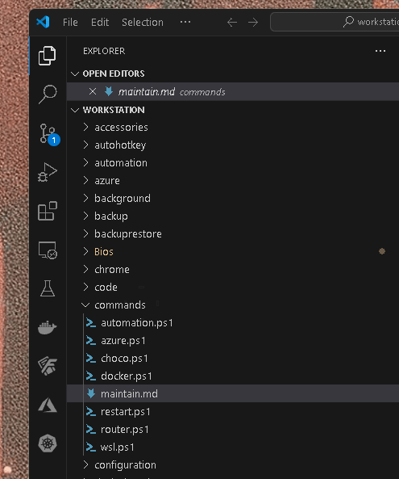
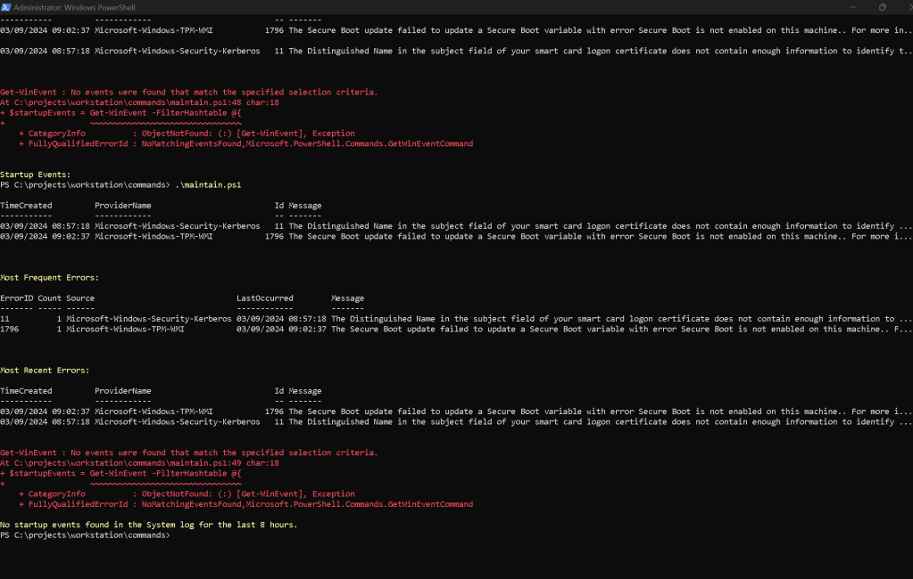

Faster Start Time

Logs >

https://github.com/rifaterdemsahin/workstation/blob/68ca5d9688c9efd3bba29567bf70253bed967946/commands/maintain.md?plain=1



fix the main tain code

Your PowerShell script is functioning correctly, but it’s not finding any startup events within the specified time ranges (8 hours and 24 hours). This could be due to several reasons:
-
No Matching Events Logged: The system may not have logged any startup events with IDs 6005 (Event log service started), 6006 (Event log service stopped), or 6008 (Unexpected shutdown) in the specified time frames.
-
System Logging Settings: The logging level or settings on your system might be configured in a way that doesn’t log these events frequently or at all.
Possible Solutions
To handle this situation more gracefully and improve the script, you can:
-
Suppress the Error Messages: Use
-ErrorAction SilentlyContinuewithGet-WinEventto prevent the error message from displaying when no events are found. -
Check for Specific Time Frames Dynamically: Automatically extend the search to different time frames until events are found, or until a maximum range is reached.
-
Expand Event Search Criteria: You can modify the event IDs or add more relevant IDs to widen your search for startup-related events.
Here’s an enhanced version of the script incorporating these suggestions:
Enhanced PowerShell Script
Define the base time range (last 8 hours)
$timeRange = (Get-Date).AddHours(-8)
Fetch errors from the last 8 hours in Application and System logs
$errors = Get-WinEvent -FilterHashtable @{
LogName = 'Application', 'System';
Level = 2;
StartTime = $timeRange
} -ErrorAction SilentlyContinue
Check and display errors if found
if ($errors) {
$errors |
Select-Object -Property TimeCreated, ProviderName, Id, Message |
Sort-Object TimeCreated |
Format-Table -AutoSize
# Summary of the most frequent errors
$mostFrequentErrors = $errors |
Group-Object -Property Id |
Sort-Object Count -Descending |
Select-Object -First 5
Write-Host "`nMost Frequent Errors:" -ForegroundColor Yellow
$mostFrequentErrors | ForEach-Object {
$errorSample = $_.Group[0]
[PSCustomObject]@{
ErrorID = $_.Name
Count = $_.Count
Source = $errorSample.ProviderName
LastOccurred = $errorSample.TimeCreated
Message = $errorSample.Message
}
} | Format-Table -AutoSize
# Summary of the most recent errors
$recentErrors = $errors |
Sort-Object TimeCreated -Descending |
Select-Object -First 5
Write-Host "`nMost Recent Errors:" -ForegroundColor Yellow
$recentErrors |
Select-Object -Property TimeCreated, ProviderName, Id, Message |
Format-Table -AutoSize
} else {
Write-Host "No errors found in the Application and System logs for the last 8 hours." -ForegroundColor Yellow
}
Fetch startup events from the System log
$startupEvents = Get-WinEvent -FilterHashtable @{
LogName = 'System';
Id = 6005, 6006, 6008;
StartTime = $timeRange
} -ErrorAction SilentlyContinue
Display startup events if found
if ($startupEvents) {
Write-Host "`nStartup Events:" -ForegroundColor Yellow
$startupEvents |
Select-Object -Property TimeCreated, Id, Message |
Sort-Object TimeCreated |
Format-Table -AutoSize
} else {
Write-Host "No startup events found in the System log for the last 8 hours." -ForegroundColor Yellow
# Optional: Provide a prompt to adjust the time range if no startup events are found
$userInput = Read-Host "Would you like to extend the time range to 24 hours to check for startup events? (y/n)"
if ($userInput -eq 'y') {
$timeRange = (Get-Date).AddHours(-24)
$startupEvents = Get-WinEvent -FilterHashtable @{
LogName = 'System';
Id = 6005, 6006, 6008;
StartTime = $timeRange
} -ErrorAction SilentlyContinue
if ($startupEvents) {
Write-Host "`nStartup Events (last 24 hours):" -ForegroundColor Yellow
$startupEvents |
Select-Object -Property TimeCreated, Id, Message |
Sort-Object TimeCreated |
Format-Table -AutoSize
} else {
Write-Host "No startup events found in the System log for the last 24 hours." -ForegroundColor Yellow
}
}
}
Key Enhancements in This Version:
-
Suppress Error Messages: Using
-ErrorAction SilentlyContinuewithGet-WinEventprevents error messages from displaying when no events are found, making the script output cleaner. -
Dynamic Range Adjustment: The script prompts the user to extend the search to 24 hours if no startup events are found initially. This provides flexibility without requiring manual adjustments to the script.
-
Enhanced Usability: By suppressing unnecessary errors and clearly prompting for user input, the script is easier to use and understand.
Next Steps
Run the script again. If there are no startup events within the extended 24-hour period, consider further extending the time frame or reviewing your system’s event logging settings to ensure it is configured to capture the desired events.
``
Imported from rifaterdemsahin.com · 2025